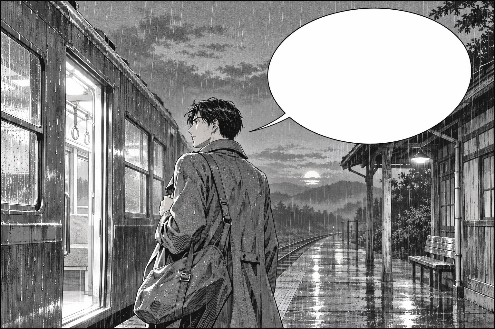

Scan and translate
OCR reads Japanese text from PNG, JPG and WebP pages. Use Google Translate, DeepL, LibreTranslate, Ollama or an OpenAI-compatible service.
MANGA EDITOR
A Windows workspace for translating Japanese manga. Open a chapter folder, choose a translation provider, and check the lettering on each page.

This is the last train.
OCR reads Japanese text from PNG, JPG and WebP pages. Use Google Translate, DeepL, LibreTranslate, Ollama or an OpenAI-compatible service.
Compare the original, mask and cleaned page. Review reconstructed artwork and import a font to match the lettering.
Check line breaks and placement, then export the approved pages as full-resolution PNGs in one ZIP.


Install Rust, the MSVC C++ build tools, Python 3.11 and uv. Run these commands in the source folder. Setup downloads the OCR and cleanup models.
Open the GitHub repositoryGitHub repository access is currently restricted.
powershell -ExecutionPolicy Bypass -File .\setup.ps1
cargo run --locked